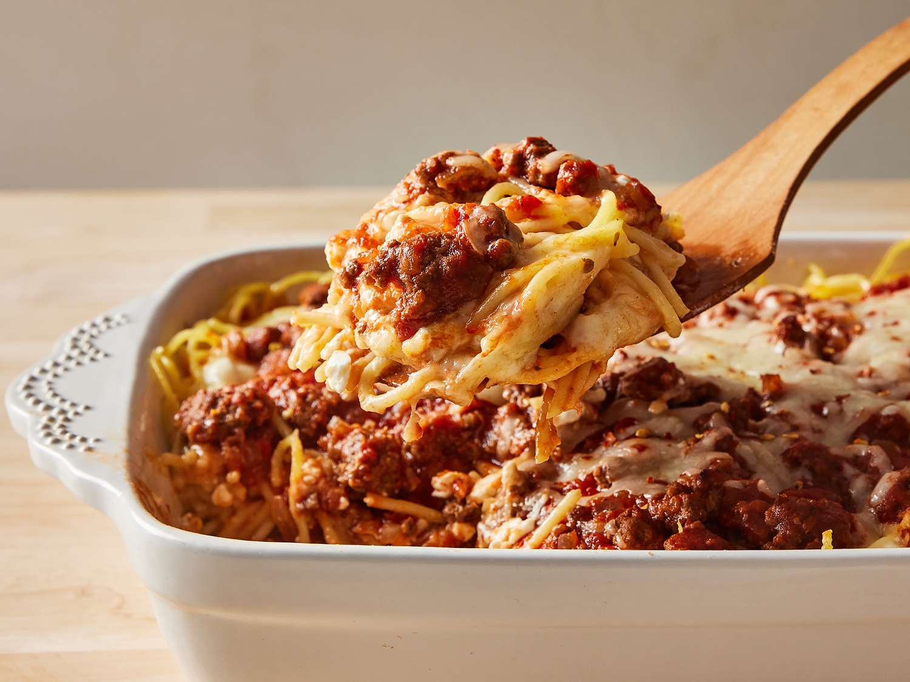

Home
Baked Spaghetti

Description:
A baked spaghetti recipe based on
Baked Spaghetti from Allrecipes.
Ingredients:
- Noodles: Spaghetti noodles.
- Beef and onion: A mixture of ground beef and diced onions for the meat sauce.
- Sauce: A jar of meatless spaghetti sauce.
- Salt: Seasoned salt to enhance the flavor.
- Eggs: To lend moisture and hold the baked spaghetti together.
- Cheeses: Parmesan, mozzarella, and cotage cheeses.
- Butter: Melted butter.
How to Cook Baked Spaghetti:
- Boil and drain the spaghetti noodles.
- Cook the beef and onion together then drain any excess oil afterwards.
- Add the spaghetti sauce and salt while whisking the eggs, parmesan, and butter in another bowl.
- Put the spaghetti in the parmesan mixture.
- Layer the ingredients in a baking dish.
- Cover with aluminum foil and then bake for 40 minutes. Remove the foil and sprinkle mozzarella cheese.
- Continue to bake for around 20-25 minutes until the cheese is melted.